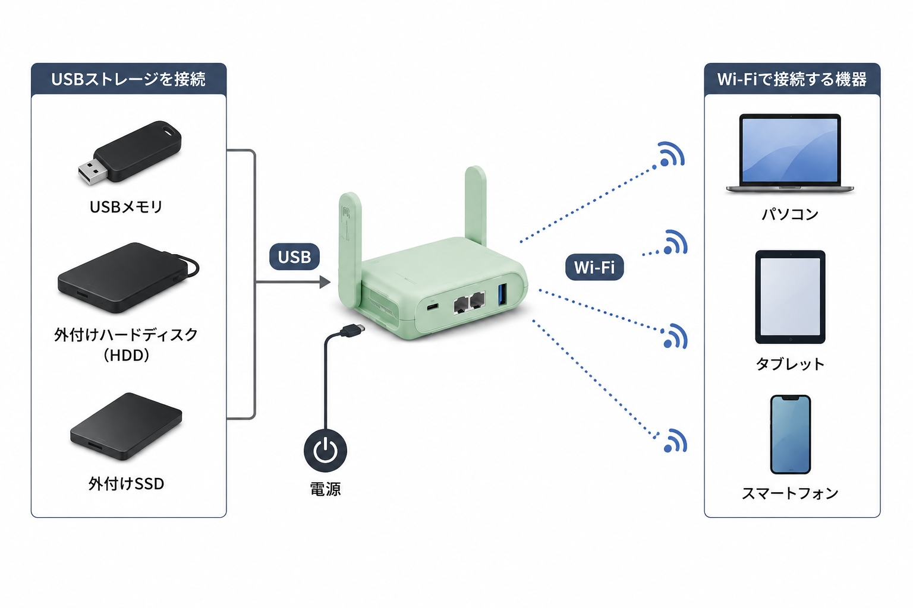

USBメモリを抜き差しせずに共有したい
PCにUSBメモリを差してデータを編集して、スマホで参照して…という作業をなくせます。
ハードディスクやSSDをつなげることもできる。という方法を紹介します。
例えば…
MT3600BEを使ってUSBメモリをネットワークストレージとして扱うことができます。
それによって、MT3600BEと接続しているPCもやスマホでUSBメモリのデータを参照、または編集できます。

何が便利なの？
USBを抜いたり差したりしなくてもいい
USBメモリを端末ごとに抜き差しせず、PC・スマホ・タブレットなどから同じデータを利用できる。
私の場合は、使う時だけUSBを共有するようにしている。常にネットワークストレージとして使うのもありだろう。
USB端子の種類を気にしなくていい
機器側とUSBメモリはUSB-Aポートにつなげる必要があるが、他の端末とはWi-Fi経由なので、Type-Cへの変換アダプターなどを用意する必要がない。
私はスマホやMacなどのポートにマグネット変換アダプタをつけているので、特にこの恩恵を受ける。
手持ちのストレージを簡易NASとして活用できる
USBメモリだけでなく、外付けSSDやHDDもネットワークストレージとして使える。
専用NASを用意しなくても、手軽にファイル共有環境を作れる。
よりたくさんのストレージを共有したい場合は、VPNで自宅ネットワークに接続できるようにするといい。
VPN環境についてはコチラを参照。
使っているもの
GL.iNet MT3600BE (Beryl 7)
USBメモリや外付けSSD、HDDを接続し、ネットワーク上で共有するために使用します。
MT3600BEの詳しいスペックについてはコチラを参照。
また、MT3000や、SFT1200でも同じことができる。
インターネット回線
USBストレージの共有だけであれば、MT3600BEをインターネットに接続する必要はありません。
ただし、MT3600BEのWi-Fiに接続した機器でインターネットも同時に利用するため、私はFS050Wをリピーターで接続しています。
リピーターモードの説明はコチラ。
既存のルーターとLANケーブルで接続する方法でもいい。
USBメモリ・外付けSSD・HDD
共有したいストレージをMT3600BEのUSB-Aポートに接続します。
特別これがいいというものもないが、フォーマット形式には気をつける必要がある
APFSなどMac向けのフォーマットでは認識できないため、MacとWindowsの両方で扱いやすいexFATなどの形式がオススメ。
実際の使用例
注意点・うまくいかなかったこと